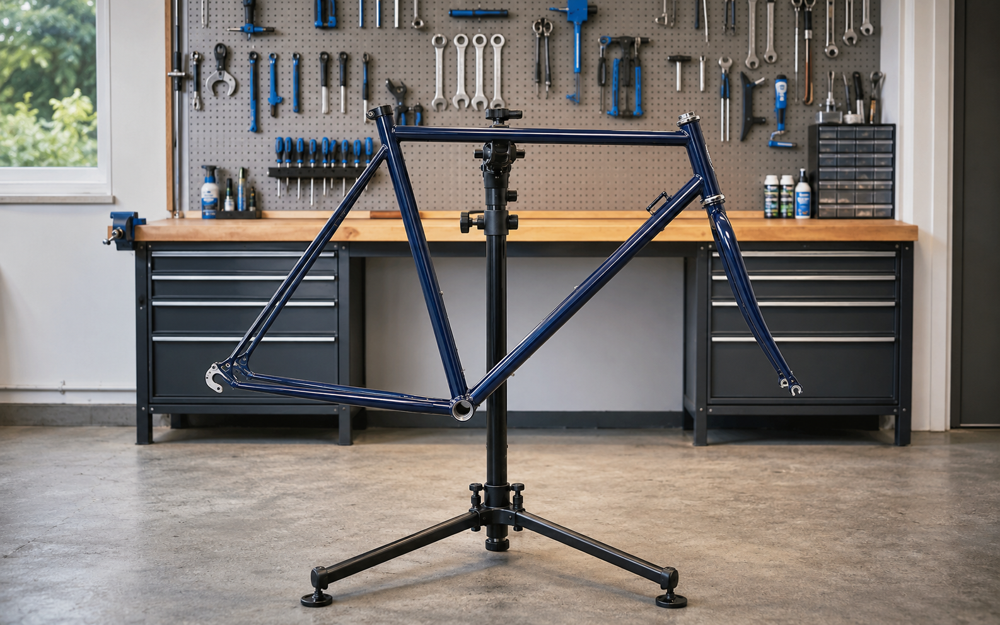

NIEUWE MISSIE
Bouw je fiets. Stuur naar de finish.
Vul je naam en leeftijd in. Het spel kiest daarna automatisch de juiste fiets, montage en route. Hoe ouder je bent, hoe groter de technische uitdaging.
fiets en onderdelen
en tegenliggers
en verdien het achterlicht
WERKPLAATS · SPELER 1 · 12 JAAR
bouwt de fiets
Sleep het onderdeel naar de oplichtende plek. Tikken werkt ook.

TECHNISCHE KEURING
De fiets is goedgekeurd!
, de fiets is goedgekeurd. Voltooi nu jouw route en verdien het achterlicht.
↑ fietsen · ← → vrij over het fietspad · ↓ remmen en stoppen
Blijf op het fietspad en stop altijd voor rood licht.
PARCOURS · SPELER 1 · 12 JAAR
fietst
Fiets door een echte Nederlandse omgeving. Ieder level wordt smaller, drukker en sneller.
BELONING ONTGRENDELD
Monteer het achterlicht
heeft alle 10 levels gehaald. Plaats het verdiende achterlicht op de lege plek.
FINISH BEREIKT
is binnen!
EINDUITSLAG
Wie voltooit zijn niveau het snelst?
Montagetijd + fietstijd + strafseconden bepalen de uitslag. Vergelijk tijden vooral binnen dezelfde leeftijd.